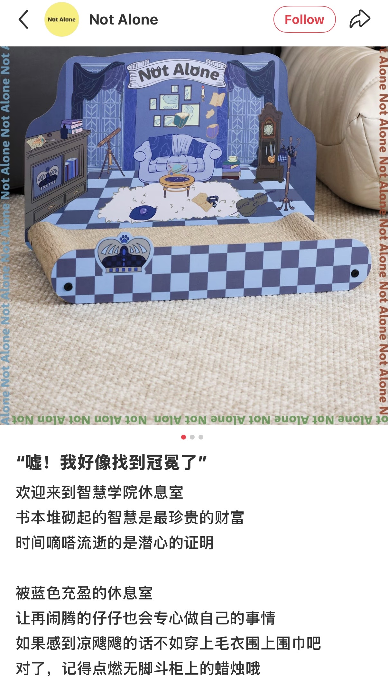
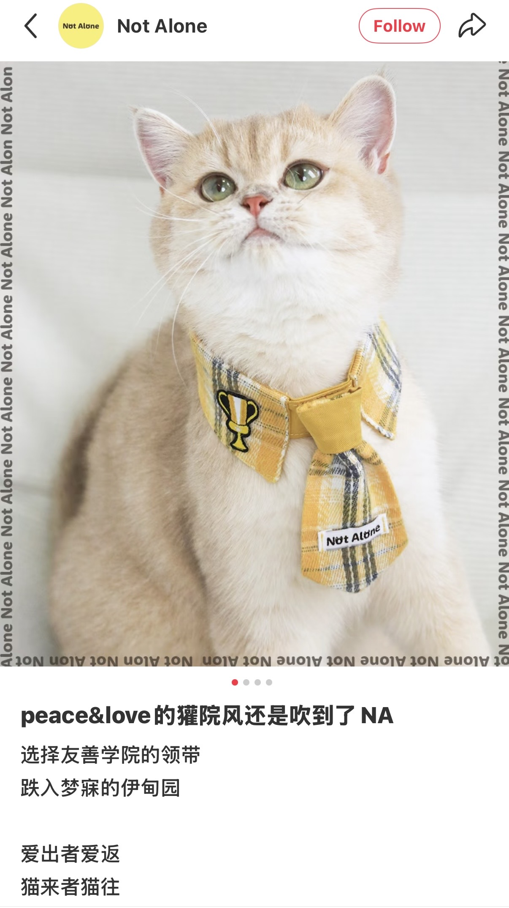
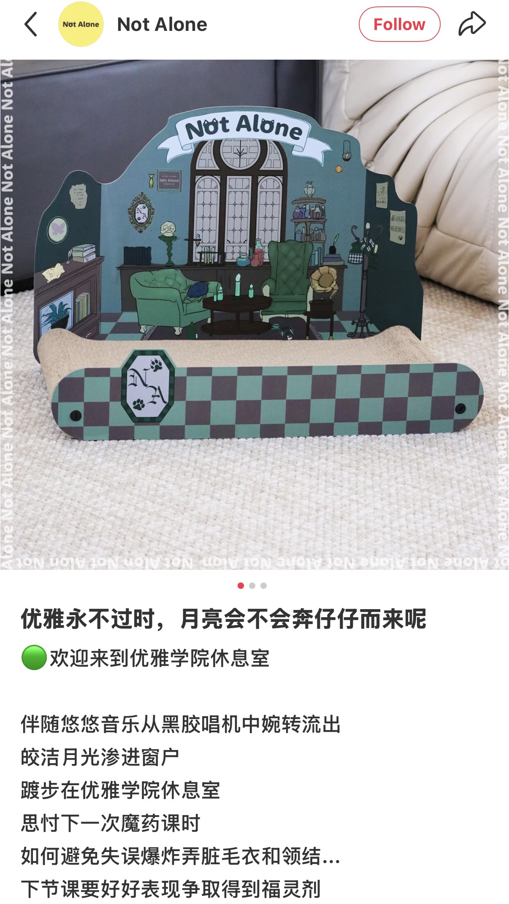

CASE STUDY · 01 / 2024
以「魔法学院」为灵感，将宠物用品融入熟悉的文化符号与角色设定。 从小红书的轻量表达，到微信公众号的系列化图文， 我尝试用内容与视觉叙事，让产品不止于展示，也拥有自己的故事。
PROJECT OVERVIEW
PROJECT INTRODUCTION
「魔法学院」是 Not Alone 不孤岛围绕宠物用品展开的系列社交媒体内容。 项目以大众熟悉的魔法学院意象为灵感，将学院色彩、角色性格与宠物产品建立联系， 让产品不再只是单独的商品展示，而成为宠物个性表达的一部分。 项目覆盖小红书与微信公众号，我参与内容选题、文案创作、社媒发布及公众号图文编辑与排版。
01 — CONTENT STRATEGY
项目的内容思路围绕三个环节展开：先以熟悉的文化符号建立主题认知， 再将学院代表色与风格融入不同宠物用品的设定， 最后通过适合社交平台的文案与视觉表达，让产品进入一个更具代入感的故事场景。
系列以四大学院为主线，关联毛衣、领结、猫抓板与蜡烛造型宠物发声玩具等产品， 并延伸出「麻瓜粉」配色。统一的主题让不同产品之间形成关联， 也为后续内容创作提供了清晰的表达框架。
02 — XIAOHONGSHU CONTENT
在小红书内容中，我围绕系列主题参与选题与文案创作， 将宠物拟人化表达、网络流行语境与产品特点结合， 以轻量、有趣且容易理解的方式呈现产品。 例如「嘿！我好像找到冠冕了」这样的表达， 将产品与学院故事联系起来，在传递产品信息的同时强化主题记忆点。



03 — WECHAT CONTENT PRODUCTION
相较于小红书更轻量、强调标题吸引力与社交语境的表达， 微信公众号更适合完整呈现系列主题与产品信息。 我参与公众号内容策划、文案创作，并使用秀米进行图文编辑与排版， 将主题引入、产品展示与系列内容串联起来， 通过清晰的信息层级与统一的视觉风格，提升整体阅读连贯性。
04 — CONTENT TO VISUAL
在内容落地过程中，我先根据平台属性与传播目的确定核心信息和内容层级， 再使用秀米完成公众号图文编辑与排版，并通过 Canva 辅助版式构思与视觉呈现。 根据内容调整字体、配色、留白与网格结构， 并反复检查标题与正文层级、图片比例、文字密度及对齐关系， 在保持系列视觉一致性的同时，确保信息清晰易读。
05 — MY ROLE
参与「魔法学院」系列的内容选题、文案创作与社媒发布； 负责微信公众号图文的秀米编辑与排版，以及内容上传发布。 在实践中，我尝试将文化符号转化为内容创意， 并结合不同平台的表达特点，完成从内容构思到视觉呈现的落地。
06 — KEY TAKEAWAY
对我而言，这个项目的关键在于建立产品与用户之间的叙事连接： 以统一的主题形成系列辨识度，以符合平台语境的内容拉近距离， 再通过有秩序的图文呈现，让创意真正落到用户能够阅读和理解的内容中。